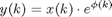

Contents
PhaseNoiseClass
Parent class: AttributeClass. PhaseNoiseClass is a specific nonideality of a VCO.
Methods
PhaseNoiseClass@PhaseNoiseClass
OBJ=PhaseNoiseClass(NAME)
PhaseNoiseClass object contructor. The PhaseNoiseClass/Name property is set to NAME.
multiplier@PhaseNoiseClass
OUTP=multiplier(OBJECT,INP)
The method computed the multiplier of the phase noise effect.
effect@PhaseNoiseClass
OUTP=effect(OBJECT,INP)
Applies the OBJECT phase noise to input signal INP and returns the result in OUTP. The most general one is a phase modulation:

where phi(k) is a time domain desciption of the phase noise.